QUEM SOU EU?
Olá, me chamo Isaac Berdaky. É um Prazer conhecer você!JUNIOR
JUNIOR
JUNIOR
MINHAS SOFTSKILLS
Habilidade de se
comunicar de forma clara,
ouvindo ativamente e
transmitindo ideias com
precisão.

Capacidade de se adaptar
rapidamente a mudanças,
ajustando estratégias e
mantendo eficiência.
Criatividade para gerar
soluções inovadoras,
explorando ideias originais e
abordagens únicas.
MINHAS HARDSKILLS
Conhecimento em
JavaScript e outras
linguagens, aplicando
lógica e boas práticas no
código.
Conhecimento em HTML para
estruturar páginas e criar
layouts organizados e
responsivos na web.
Inglês básico/médio para
compreender conteúdos
técnicos, comunicar-se e
interpretar informações.
Meus Serviços
Ofereço serviços freelancers em desenvolvimento web, edição de vídeo e criação de aplicativos personalizados. Trabalho com qualidade e preços a combinar, buscando sempre atender às necessidades e expectativas de cada cliente. Tem interesse em transformar a sua ideia em realidade? Me contate!
MEUS PROJETOS

OBRIGADO POR CHEGAR AQUI!
Por que não entra em contato comigo?
TELEFONE +55 41 99818-1788
EMAIL isaacberdaky@gmail.com
EMAIL isaacberdaky@gmail.com